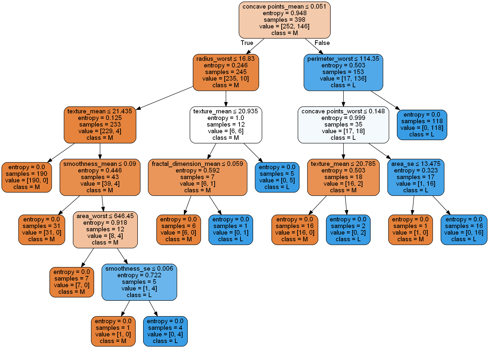

Tahap Implementasi dengan python¶
- Import Libarary
import pandas as pd
from sklearn.model_selection import train_test_split
from sklearn import metrics #importing modul metrik
from sklearn.tree import DecisionTreeClassifier
from sklearn.tree import export_graphviz
from sklearn.externals.six import StringIO
from IPython.display import Image
import pydotplus- Load Data Set
data = pd.read_csv("breast-cancer.csv")
- Menampilkan 10 data teratas
data.head(10)
| id | diagnosis | radius_mean | texture_mean | perimeter_mean | area_mean | smoothness_mean | compactness_mean | concavity_mean | concave points_mean | ... | texture_worst | perimeter_worst | area_worst | smoothness_worst | compactness_worst | concavity_worst | concave points_worst | symmetry_worst | fractal_dimension_worst | Unnamed: 32 | |
|---|---|---|---|---|---|---|---|---|---|---|---|---|---|---|---|---|---|---|---|---|---|
| 0 | 842302 | M | 17.99 | 10.38 | 122.80 | 1001.0 | 0.11840 | 0.27760 | 0.30010 | 0.14710 | ... | 17.33 | 184.60 | 2019.0 | 0.1622 | 0.6656 | 0.7119 | 0.2654 | 0.4601 | 0.11890 | NaN |
| 1 | 842517 | M | 20.57 | 17.77 | 132.90 | 1326.0 | 0.08474 | 0.07864 | 0.08690 | 0.07017 | ... | 23.41 | 158.80 | 1956.0 | 0.1238 | 0.1866 | 0.2416 | 0.1860 | 0.2750 | 0.08902 | NaN |
| 2 | 84300903 | M | 19.69 | 21.25 | 130.00 | 1203.0 | 0.10960 | 0.15990 | 0.19740 | 0.12790 | ... | 25.53 | 152.50 | 1709.0 | 0.1444 | 0.4245 | 0.4504 | 0.2430 | 0.3613 | 0.08758 | NaN |
| 3 | 84348301 | M | 11.42 | 20.38 | 77.58 | 386.1 | 0.14250 | 0.28390 | 0.24140 | 0.10520 | ... | 26.50 | 98.87 | 567.7 | 0.2098 | 0.8663 | 0.6869 | 0.2575 | 0.6638 | 0.17300 | NaN |
| 4 | 84358402 | M | 20.29 | 14.34 | 135.10 | 1297.0 | 0.10030 | 0.13280 | 0.19800 | 0.10430 | ... | 16.67 | 152.20 | 1575.0 | 0.1374 | 0.2050 | 0.4000 | 0.1625 | 0.2364 | 0.07678 | NaN |
| 5 | 843786 | M | 12.45 | 15.70 | 82.57 | 477.1 | 0.12780 | 0.17000 | 0.15780 | 0.08089 | ... | 23.75 | 103.40 | 741.6 | 0.1791 | 0.5249 | 0.5355 | 0.1741 | 0.3985 | 0.12440 | NaN |
| 6 | 844359 | M | 18.25 | 19.98 | 119.60 | 1040.0 | 0.09463 | 0.10900 | 0.11270 | 0.07400 | ... | 27.66 | 153.20 | 1606.0 | 0.1442 | 0.2576 | 0.3784 | 0.1932 | 0.3063 | 0.08368 | NaN |
| 7 | 84458202 | M | 13.71 | 20.83 | 90.20 | 577.9 | 0.11890 | 0.16450 | 0.09366 | 0.05985 | ... | 28.14 | 110.60 | 897.0 | 0.1654 | 0.3682 | 0.2678 | 0.1556 | 0.3196 | 0.11510 | NaN |
| 8 | 844981 | M | 13.00 | 21.82 | 87.50 | 519.8 | 0.12730 | 0.19320 | 0.18590 | 0.09353 | ... | 30.73 | 106.20 | 739.3 | 0.1703 | 0.5401 | 0.5390 | 0.2060 | 0.4378 | 0.10720 | NaN |
| 9 | 84501001 | M | 12.46 | 24.04 | 83.97 | 475.9 | 0.11860 | 0.23960 | 0.22730 | 0.08543 | ... | 40.68 | 97.65 | 711.4 | 0.1853 | 1.0580 | 1.1050 | 0.2210 | 0.4366 | 0.20750 | NaN |
10 rows × 33 columns
- Menghilangkan kolom yang tidak berguna
data.info()
Hasil :
data.drop("id",axis=1,inplace=True)
data.drop("Unnamed: 32",axis=1,inplace=True)
data.info()
Hasil
<class 'pandas.core.frame.DataFrame'>
RangeIndex: 569 entries, 0 to 568
Data columns (total 31 columns):
diagnosis 569 non-null object
radius_mean 569 non-null float64
texture_mean 569 non-null float64
perimeter_mean 569 non-null float64
area_mean 569 non-null float64
smoothness_mean 569 non-null float64
compactness_mean 569 non-null float64
concavity_mean 569 non-null float64
concave points_mean 569 non-null float64
symmetry_mean 569 non-null float64
fractal_dimension_mean 569 non-null float64
radius_se 569 non-null float64
texture_se 569 non-null float64
perimeter_se 569 non-null float64
area_se 569 non-null float64
smoothness_se 569 non-null float64
compactness_se 569 non-null float64
concavity_se 569 non-null float64
concave points_se 569 non-null float64
symmetry_se 569 non-null float64
fractal_dimension_se 569 non-null float64
radius_worst 569 non-null float64
texture_worst 569 non-null float64
perimeter_worst 569 non-null float64
area_worst 569 non-null float64
smoothness_worst 569 non-null float64
compactness_worst 569 non-null float64
concavity_worst 569 non-null float64
concave points_worst 569 non-null float64
symmetry_worst 569 non-null float64
fractal_dimension_worst 569 non-null float64
dtypes: float64(30), object(1)
memory usage: 137.9+ KB- Melihat hasilnya
data.head(10)
Hasil :
| diagnosis | radius_mean | texture_mean | perimeter_mean | area_mean | smoothness_mean | compactness_mean | concavity_mean | concave points_mean | symmetry_mean | ... | radius_worst | texture_worst | perimeter_worst | area_worst | smoothness_worst | compactness_worst | concavity_worst | concave points_worst | symmetry_worst | fractal_dimension_worst | |
|---|---|---|---|---|---|---|---|---|---|---|---|---|---|---|---|---|---|---|---|---|---|
| 0 | M | 17.99 | 10.38 | 122.80 | 1001.0 | 0.11840 | 0.27760 | 0.30010 | 0.14710 | 0.2419 | ... | 25.38 | 17.33 | 184.60 | 2019.0 | 0.1622 | 0.6656 | 0.7119 | 0.2654 | 0.4601 | 0.11890 |
| 1 | M | 20.57 | 17.77 | 132.90 | 1326.0 | 0.08474 | 0.07864 | 0.08690 | 0.07017 | 0.1812 | ... | 24.99 | 23.41 | 158.80 | 1956.0 | 0.1238 | 0.1866 | 0.2416 | 0.1860 | 0.2750 | 0.08902 |
| 2 | M | 19.69 | 21.25 | 130.00 | 1203.0 | 0.10960 | 0.15990 | 0.19740 | 0.12790 | 0.2069 | ... | 23.57 | 25.53 | 152.50 | 1709.0 | 0.1444 | 0.4245 | 0.4504 | 0.2430 | 0.3613 | 0.08758 |
| 3 | M | 11.42 | 20.38 | 77.58 | 386.1 | 0.14250 | 0.28390 | 0.24140 | 0.10520 | 0.2597 | ... | 14.91 | 26.50 | 98.87 | 567.7 | 0.2098 | 0.8663 | 0.6869 | 0.2575 | 0.6638 | 0.17300 |
| 4 | M | 20.29 | 14.34 | 135.10 | 1297.0 | 0.10030 | 0.13280 | 0.19800 | 0.10430 | 0.1809 | ... | 22.54 | 16.67 | 152.20 | 1575.0 | 0.1374 | 0.2050 | 0.4000 | 0.1625 | 0.2364 | 0.07678 |
| 5 | M | 12.45 | 15.70 | 82.57 | 477.1 | 0.12780 | 0.17000 | 0.15780 | 0.08089 | 0.2087 | ... | 15.47 | 23.75 | 103.40 | 741.6 | 0.1791 | 0.5249 | 0.5355 | 0.1741 | 0.3985 | 0.12440 |
| 6 | M | 18.25 | 19.98 | 119.60 | 1040.0 | 0.09463 | 0.10900 | 0.11270 | 0.07400 | 0.1794 | ... | 22.88 | 27.66 | 153.20 | 1606.0 | 0.1442 | 0.2576 | 0.3784 | 0.1932 | 0.3063 | 0.08368 |
| 7 | M | 13.71 | 20.83 | 90.20 | 577.9 | 0.11890 | 0.16450 | 0.09366 | 0.05985 | 0.2196 | ... | 17.06 | 28.14 | 110.60 | 897.0 | 0.1654 | 0.3682 | 0.2678 | 0.1556 | 0.3196 | 0.11510 |
| 8 | M | 13.00 | 21.82 | 87.50 | 519.8 | 0.12730 | 0.19320 | 0.18590 | 0.09353 | 0.2350 | ... | 15.49 | 30.73 | 106.20 | 739.3 | 0.1703 | 0.5401 | 0.5390 | 0.2060 | 0.4378 | 0.10720 |
| 9 | M | 12.46 | 24.04 | 83.97 | 475.9 | 0.11860 | 0.23960 | 0.22730 | 0.08543 | 0.2030 | ... | 15.09 | 40.68 | 97.65 | 711.4 | 0.1853 | 1.0580 | 1.1050 | 0.2210 | 0.4366 | 0.20750 |
10 rows × 31 columns
-
kelas m dan b menjadi 0 dan 1
data.diagnosis=data.diagnosis.map({'M':1,'B':0})
hitung berapa banyak jumlah masing- masing feature
data.diagnosis.value_counts()
hasil :
0 357 1 212 Name: diagnosis, dtype: int64
-
Membagi data testing dan data training
train, test = train_test_split(data, test_size = 0.3,random_state=1234)
print(train.shape) print(test.shape)
Hasil :
(398, 31) (171, 31)
-
Membuat variabel independen dan responsible train_X = train.iloc[:, 1:31] train_y=train.diagnosis test_X= test.iloc[:, 1:31] test_y =test.diagnosis print(train_X.shape) print(train_y.shape) print(test_X.shape) print(test_y.shape)
Hasil :
(398, 30) (398,) (171, 30) (171,)
-
Seleksi fitur
feature_cols = ["radius_mean","texture_mean","perimeter_mean","area_mean","smoothness_mean","compactness_mean","concavity_mean","concave points_mean","symmetry_mean","fractal_dimension_mean","radius_se","texture_se","perimeter_se","area_se","smoothness_se","compactness_se","concavity_se","concave points_se","symmetry_se","fractal_dimension_se","radius_worst","texture_worst","perimeter_worst","area_worst","smoothness_worst","compactness_worst","concavity_worst","concave points_worst","symmetry_worst","fractal_dimension_worst",] X = data[feature_cols] y = data.diagnosis -
Pohon Keputusan dengan criterion information gain
model_entropy= DecisionTreeClassifier(criterion="entropy",random_state=1234) model_entropy.fit(train_X,train_y)
prediction_entropy=model_entropy.predict(test_X) print("Accuracy:",metrics.accuracy_score(prediction,test_y)) print("Confusion Metrix:\n",metrics.confusion_matrix(prediction,test_y))
Hasil :
Accuracy: 0.9298245614035088 Confusion Metrix: [[99 6] [ 6 60]]
-
Visual pohon keputusan dengan criterion information gain
dot_data = StringIO() export_graphviz(model_entropy, out_file=dot_data,
filled=True, rounded=True, special_characters=True,feature_names = feature_cols,class_names=['M','L']) graph = pydotplus.graph_from_dot_data(dot_data.getvalue())
graph.write_png('entropy.png') Image(graph.create_png())